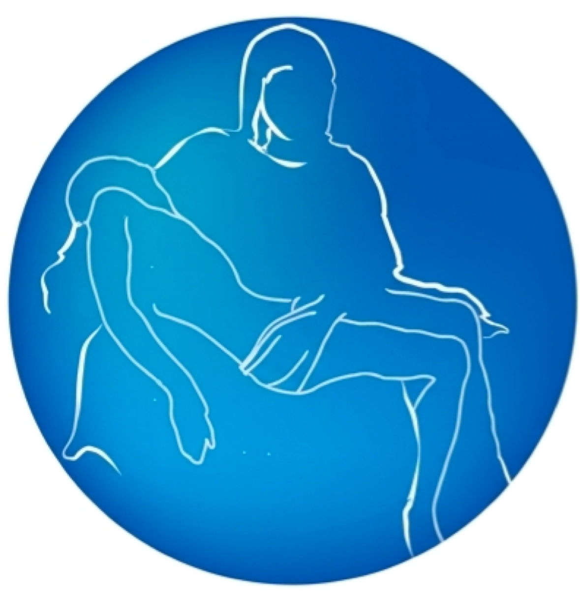

Análisis clínicos y gabinete
Ética y precisión al cuidado de su salud
Laboratorio Clínico La Piedad es un centro de atención médica y diagnóstico que ofrece servicios de laboratorio clínico y estudios especializados, enfocados en contribuir al cuidado y seguimiento de la salud de nuestros pacientes. Contamos con una amplia variedad de estudios clínicos, entre los que se encuentran análisis de sangre, química sanguínea, biometría hemática, examen general de orina, perfiles hormonales y pruebas rápidas, entre otros. Además, ofrecemos servicios complementarios de diagnóstico, como ultrasonidos, electrocardiogramas, rayos X y estudios especializados, así como atención médica en diversas especialidades. Nuestro objetivo es brindar una atención accesible y profesional, facilitando a nuestros pacientes el acceso a estudios que permitan a sus médicos obtener información útil para la prevención, detección y seguimiento de distintas condiciones de salud.
En Laboratorio Clínico La Piedad, tu salud es nuestra prioridad.
Si te interesa recibir más información contactanos
Modificar cuadro de contacto
Horarios:
Lunes - Viernes 7:00 AM a 8:00 PM Sábados 7:00 AM a 5:00 PM
Tenemos una amplia variedad de especialidades, selecciona la opción de tu preferencia